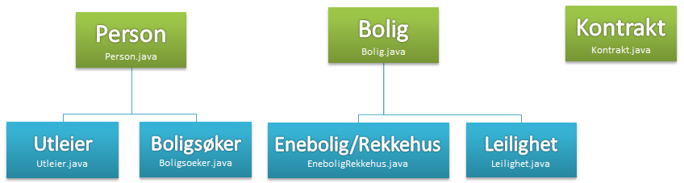
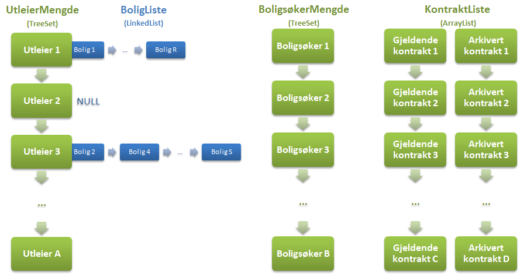
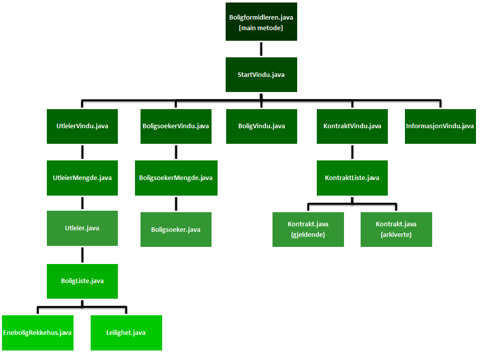
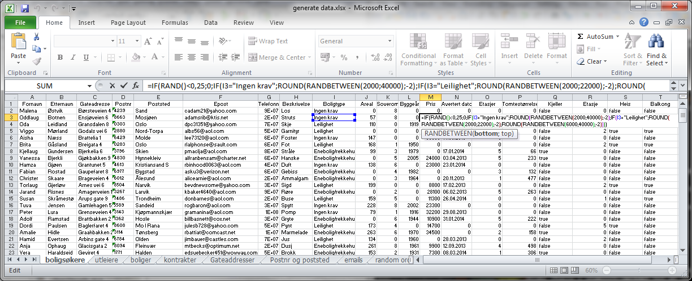

Produktdokumentasjon
Oppbygning av programmet
Klassehierarki
Vi har tre klasser som utgjør objektene som brukes i programmet, dvs. person, bolig og kontrakt. Person-klassen har to subklasser, utleiere og boligsøkere. Bolig-klassen har også to subklasser, enebolig/rekkehus og leilighet.
Datastruktur
Objektene lagres i en datastruktur, dvs. Person-objektene lagres i en TreeSet-mengde og hvert Utleier-objekt innholder en LinkedList-liste over alle boliger vedkommende er knyttet til. Vi valgte TreeSet datastrukturen for Personer fordi det hindrer dobbeltlagring og er sortert (f.eks. mht. personens navn). Vi valgte LinkedList datastrukturen for Boligene fordi den er effektiv når man skal sette inn og fjerne objekter, som er en stor del av vår program.
Kontrakt klassen inneholder to ArrayList-lister, en for gjeldende kontrakter og en for arkviverte kontrakter. Vi valgte ArrayList-liste fordi der er effektivt å søke gjennom og hente ut data (bruke indekser). Samtidig skal vi heller ikke fjerne noe fra listen.
Programstruktur
Programmet har en træstruktur, dvs. alle klassene tilhører en øvrige klasse, utenfør klassen som inneholder main metoden (se diagram her under). Hver klasse er beskrevet nedenfor.
Boligformidleren.java
Denne klassen inneholder main-metoden og den oppretter et StartVindu-objekt, som åpnes når programmet er kjørt. Lukkeknappen på StartVinduet er programmert slik at den skriver alle mengder og lister til fil før programmet avsluttes. Boligformidleren.java inneholder følgende metoder
- public static void main(String[] args)
StartVindu.java
Denne klassen inneholder alle andre vindu-klassene (utleiervindu, boligsøkervindu, boligvindu, kontraktvindu, informasjonvindu) og kobler dem sammen med get-metoder (static). Dette betyr at alle klassene har tilgang til hver annen i gjennom denne klassen. StartVindu-klassen inneholder i tillegg alle konstanter (static) som brukes av mer enn en klasse, f.eks. regulære uttrykk (regex) mønstre. Til slutt inneholder denne klassen generelle metoder som bruker i andre klasser, f.eks. for regex, skrive data til fil o.fl. StartVindu.java inneholder følgende metoder
- public StartVindu() - konstruktør
- public static UtleierVindu getUtleierVindu()
- public static BoligsoekerVindu getBoligsoekerVindu()
- public static BoligVindu getBoligVindu()
- public static KontraktVindu getKontraktVindu()
- public static InformasjonVindu getInformasjonVindu()
- public static boolean kontrollerRegEx(String pattern, JTextField[] input)
- public static String kontrollerRegExTomFeltOK(String pattern, JTextField[] input)
- public static boolean kontrollerRegEx(String pattern, String input)
- public static int konverterBlanktFeltTilHeltall(JTextField jtf)
- public static boolean tekstFeltErTomt(JTextField[] jtf)
- public static Date konverterDato(String datostreng)
- public void generateData() - ikke i bruk (brukt ved utvikling av programmet)
- public void skrivTilFil()
- public static void visFeilmelding(StackTraceElement[] ste)
- public static void visFeilmelding(Object o)
- public static String visJaNeiMelding(String melding, String vindutekst)
- public void actionPerformed(ActionEvent e)
UtleierVindu.java
Denne klassen brukes når man skal registrere, slette eller endre en utleier, dvs. den inneholder alle nødvendige felter og knapper og alle metodene som kalles når brukeren trykker på knappene. I tilleg inneholder den UtleierMengde-klassen (hvor alle utleier-objektene ligger). UtleierVindu.java inneholder følgende metoder
- public UtleierVindu() - konstruktør
- public UtleierMengde getUtleierMengde()
- public void regUtleier()
- public void slettUtleier()
- public void blankFelter()
- public boolean regexOK()
- public void endreFelt(String felt, String ny)
- public void skrivUtleierTilFil()
- public void lesUtleierFraFil()
- public void actionPerformed(ActionEvent e)
- public void focusGained(FocusEvent fe)
- public void focusLost(FocusEvent fe) - brukt for auto-fill
UtleierMengde.java
Denne klassen inneholder mengden selv (TreeSet) og alle metodene som brukes når man vil sette inn et nytt utleier-objekt, fjerne eller finner en utleier. Før en utleier kan fjernes, sjekker metoden om den har registrerte boliger eller ikke, dvs. den kan ikke fjernes hvis den har ikke tom BoligListe. I tillegg inneholder den metoder for at registrere bolig-objekter til en utleier, fordi man må først søke gjennom alle utleierene om den boligen eksisterer fra før. UtleierMengde.java inneholder følgende metoder
- public void focusLost(FocusEvent fe) - brukt for auto-fill
- public boolean fjern(Utleier ul)
- public Utleier finnUtleier(String fornavn, String etternavn)
- public Bolig finnBolig(String gateadresse, int postnr, String poststed)
- public boolean regBolig(Utleier u, Bolig b)
- public Set
kopierMengdeUsortert()
- public int antallBoliger()
- public Set
getSortertMengde()
- public String toString()
Utleier.java
Denne klassen er en konkret subklasse til Person-klassen. Implementerer interface Comparable for å kunne sortere utleierne i en TreeSet etter egendefinert rekkefølge. Legger til to ekstra datafelt, et om hvilket firma utleieren representerer og en boligliste av typen ArrayList, som inneholder alle boligobjekter utleieren har registrert. Har derfor også metoder for å sette inn og fjerne et boligøbjekt fra listen. I klassen ligger også en metode "tilRad" som bestemmer hvilke og i hvilken rekkefølge datafeltene hos en utleier skal vises i en tabell ved å legge dem inn i en array. Det er også redefinert en compareTo-metode for å kunne legge utleierobjektet i en treeSet som ikke tar imot en Comparator i kontruktøren, og en toString-metode som bestemmer hvordan informasjonen om en utleier skal skrives ut i brukergrensesnittet. Utleier.java inneholder følgende metoder
- public Utleier(String fornavn, String etternavn, String gateadresse, int postnr, String poststed, String epost, int tlfnr, String firma) - konstruktør
- public String getFirma()
- public BoligListe getBoligliste()
- public void setFirma(String f)
- public Object[] tilRad()
- public void regBolig(Bolig b)
- public void slettBolig(Bolig b)
- public int compareTo(Utleier ul)
- public String toString()
BoligListe.java
Hvert utleier-objekt inneholder den klasse, og dessuten inneholder denne klassen listen selv (LinkedList) og alle metodene som brukes når man vil sette inn et nytt bolig-objekt (enten av type 'EneboligRekkehus' eller 'Leilighet'), fjerne eller finner en bolig. BoligListe.java inneholder følgende metoder
- public List getListe()
- public void settInn(Bolig b)
- public boolean fjern(Bolig b)
- public Bolig finnBolig(String gateadresse, int postnr, String poststed)
- public String toString()
EneboligRekkehus.java
Denne klassen er en sub-klasse til Bolig-klassen og den arver alt fra Bolig, og har i tillegg datafelter for antall etasjer, tomtens areal og om huset har kjeller. toString-metoden bestemmer hvordan fulstendig informasjon om en leilighet skal presenteres i brukergrensesnittet. EneboligRekkehus.java inneholder følgende metoder
- public EneboligRekkehus(String gateadresse, int postnr, String poststed, String type, String beskrivelse, Date annonsedato, int inneAreal, int antRom, int byggeaar, int pris, int antEtasjer, int tomtAreal, boolean kjeller) - konstruktør
- public int getAntEtasjer()
- public int getTomtAreal()
- public boolean getKjeller()
- public void setAntEtasjer(int a)
- public void setTomtAreal(int t)
- public void setKjeller(boolean k)
- public String toString()
Leilighet.java
Arver fra Bolig, og har i tillegg datafelter for hvilken etasje leiligheten befinner seg i, om det er heis og om det er balkong. toString-metoden brukes på samme måte som i EneboligRekkehus-klassen. Leilighet.java inneholder følgende metoder
- public Leilighet(String gateadresse, int postnr, String poststed, String type, String beskrivelse,
Date annonsedato, int inneAreal, int antRom, int byggeaar, int pris,
int etasje, boolean heis, boolean balkong) - konstruktør
- public int getEtasje()
- public boolean getHeis()
- public boolean getBalkong()
- public void setEtasje(int e)
- public void setHeis(boolean h)
- public void setBalkong(boolean b)
- public String toString()
BoligsoekerVindu.java
Denne klassen brukes når man skal registrere, slette eller endre en boligsøker, dvs. den inneholder alle nødvendige felter og knapper og alle metodene som kalles når brukeren trykker på knappene. I tilleg inneholder den BoligsoekerMengde-klassen (hvor alle boligsoeker-objektene ligger). BoligsoekerVindu.java inneholder følgende metoder
- public BoligsoekerVindu() - konstruktør
- public BoligsoekerMengde getBoligsoekerMengde()
- public void regBoligsoeker()
- public void slettBoligsoeker()
- public boolean regexOK()
- public void endreFelt(String felt, String ny)
- public void blankFelter()
- public void skrivBoligsoekerTilFil()
- public void lesBoligsoekerFraFil()
- public void visFeilmelding(StackTraceElement[] ste)
- public void visFeilmelding(Object o)
- public void actionPerformed(ActionEvent e)
- public void focusGained(FocusEvent fe)
- public void focusLost(FocusEvent fe)
BoligsoekerMengde.java
Denne klassen inneholder mengden selv (TreeSet) og alle metodene som brukes når man vil sette inn et nytt boligsoeker-objekt, fjerne eller finner en boligsøker. BoligsoekerMengde.java inneholder følgende metoder
- public void settInn(Boligsoeker b)
- public boolean fjern(Boligsoeker bs)
- public Set
getMengde()
- public Boligsoeker finnBoligsoeker(String fornavn, String etternavn)
- public Set
kopierMengdeUsortert()
- public String toString()
Boligsoeker.java
Denne klassen er også en konkret subklasse til Person-klassen. Implementere interface Comparable for å sortere boligsøkerne i en treeSet etter egendefinert (norsk) rekkefølge. Boligsøkeren får en rekke ekstra datafelter som skal tilsvare datafeltene i en Bolig. Dette er fordi en boligsøker skal kunne registrere seg med egne krav til hvilke boliger han/hun ser på som interessante. For eksempel dersom boligsøkeren har lagret 5 som "maxEtasje", skal ikke boligsøkeren vises som interessert i leligheter som ligger høyere enn 5. etasje. Det er også et datafelt for at boligsøkeren skal kunne skrive en kort tekst om seg selv, og et datafelt som indikerer om boligsøkeren for øyeblikket leter etter en bolig. Dette er "true" som default og endres kun når boligsøkeren registrerer en kontrakt med firmaet, og evt. når kontrakten avsluttes. Det kunne vært aktuelt å legge til funksjon for manuell endring av dette datafeltet. I klassen ligger det også en metode som skal sammenlikne nevnte datafelter med de tilsvarende datafeltene hos en bolig. Dersom ett av boligsøkerens krav ikke oppfylles av boligen det sammenliknes med, skal denne boligen ikke regnes som interessant for boligsøkeren. Et viktig moment er at boligsøkeren skal kunne fylle ut så mange, eller så få, krav som han/hun ønsker. Dersom det ikke er registrert noe krav skal derfor defaultverdier som 0/"ingen krav"/null, ikke være begrensende for søket. I klassen ligger også en metode "tilRad" som bestemmer hvilke og i hvilken rekkefølge datafeltene hos en boligsøker skal vises i en tabell ved å legge dem inn i en array. Det er også redefinert en compareTo-metode for å kunne legge boligsøkerobjektet i en treeSet som ikke tar imot en Comparator i kontruktøren, og en toStringmetode som bestemmer hvordan informasjonen om en boligsøker skal skrives ut i brukergrensesnittet. Boligsoeker.java inneholder følgende metoder
- public Boligsoeker(String fornavn, String etternavn, String gateadresse, int postnr, String poststed, String epost, int tlfnr, String pInfo, String type, int areal, int soverom, int byggeaar, int pris, Date dato, int maxAntEtasjer, int tomtestorrelse, boolean kjeller, int maxEtasje, boolean heis, boolean balkong) - konstruktør
- public String getPersInfo()
- public int getAreal()
- public int getByggeaar()
- public Date getDato()
- public int getPris()
- public int getSoverom()
- public String getType()
- public int getMaxAntEtasjer()
- public int getTomtestorrelse()
- public boolean getKjeller()
- public int getMaxEtasje()
- public boolean getBalkong()
- public boolean getHeis()
- public boolean getLeterEtterBolig()
- public void setPersInfo(String p)
- public void setAreal(int a)
- public void setByggeaar(int b)
- public void setDato(Date d)
- public void setPris(int p)
- public void setSoverom(int s)
- public void setType(String t)
- public void setMaxAntEtasjer(int m)
- public void setTomtestorrelse(int t)
- public void setKjeller(boolean k)
- public void setMaxEtasje(int m)
- public void setBalkong(boolean b)
- public void setHeis(boolean h)
- public boolean passerTilBolig(Bolig b)
- public void leterEtterBolig()
- public void leterIkkeEtterBolig()
- public Object[] tilRad()
- public int compareTo(Boligsoeker bs)
- public String toString()
BoligVindu.java
Denne klassen brukes når man skal registrere, slette eller endre en bolig, dvs. den inneholder alle nødvendige felter og knapper og alle metodene som kalles når brukeren trykker på knappene. BoligVindu.java inneholder følgende metoder
- public BoligVindu() - konstruktør
- public void regBolig(String boligtype)
- public void slettBolig()
- public boolean regexOK()
- public void endreFelt(String felt, String ny)
- public void boligUtskrift()
- public void blankFelter()
- public void actionPerformed(ActionEvent e)
- public void focusGained(FocusEvent fe)
- public void focusLost(FocusEvent fe)
KontraktVindu.java
Denne klassen brukes når man skal registrere eller si opp en kontrakt, dvs. den inneholder alle nødvendige felter og knapper og alle metodene som kalles når brukeren trykker på knappene. Den inneholder KontraktListe-klassen hvor alle kontrakt-objektene ligger. Hver gang programmet kjøres, kaller denne klassen på en metode (i KontrakListe-klassen) som sjekker alle gjeldende kontrakter i GjeldendeKontrakter-listen og flytter alle utløpte kontrakter til ArkiverteKontrakter-listen.
Når en kontrakt skal registreres, sjekker denne klassen om at boligen er ledig og at boligsøkeren har ikke en gjeldende kontrakt. Når den er registrert, settes boligen til "ikke ledig" og boligsøkeren settes til "leter ikke etter bolig". Vi gjør forutsetningen at hver boligsøker kan kun ha en "gyldig" leiekontrakt (som er ikke udatert).
Kontraktregistreringen fungerer slik at en boligsøker kun kan ha en gjeldende kontrakt registrert på seg til enhver tid. Det er altså ikke mulig å leie flere enn en bolig av gangen. Det er valgt slik for å gjøre programmet og håndteringen av kontrakter enklere. Dette betyr at så lenge en boligsøker er registrert med en gjeldende kontrakt, er det ikke mulig å registrere en ny kontrakt på samme boligsøker. Det samme gjelder for boligen. Den har et statusfelt "ledig"(true). Når en bolig knyttes til en kontrakt blir statusfeltet satt til "ikke ledig"(false), og det er ikke mulig å registrere en ny kontrakt på denne boligen. Når en kontrakt går ut forandres statusen samtidig til "ledig" igjen.
Lagringen og behandlingen av oppretede kontrakter foregår i klassen KontraktListe. Her ligger det to lister av typen ArrayList, den ene for kontrakter som fortsatt er gjeldende, den andre for kontrakter som er utløpt. Ideen/hensikten er at alle nylige opprettede kontrakter legges i en separat liste, når utløpsdatoen for kontraktene er passert flyttes disse automatisk over i en annen liste. Dette skiller gjeldende og kontrakter fra kontrakter som kun er av historisk betydning på en enkel og oversiktlig måte, forutsetningen er selvsagt at datokontrollen er god nok. En mulig svakhet ved datokontrollen i dette programmet er at den kun gjennomføres for hver oppstart, dvs. programmet sjekker utløpsdatoen i kontrakten opp mot dagens dato, er utløpsdatoen passert legges kontrakten(e) over i arkivet. Brukeren av programmet er derfor avhengig av å avslutte og starte opp igjen programmet minst en gang daglig. Dette får en muligens subtil betydning ved registrering av kontrakter, nemlig at alle nyregistrerte kontrakter behandles som "gjeldende" uavhengig av om den satte sluttdatoen er før dagens dato. Det er altså først etter en restart av programmet at kontrakten vil bli sjekket og lagt i arkivet.
KontraktVindu.java inneholder følgende metoder
- public KontraktVindu() - konstruktør
- public KontraktListe getKontraktListe()
- public void regKontrakt()
- public boolean regexOK()
- public void siOppKontrakt()
- public void sjekkOmKontraktErUtloept()
- public void utskrift()
- public void blankFelter()
- public void skrivKontraktTilFil()
- public void lesKontraktFraFil()
- public void actionPerformed(ActionEvent e)
- public void focusGained(FocusEvent fe)
- public void focusLost(FocusEvent fe)
KontraktListe.java
Denne klassen inneholder to lister (ArrayList), en for gjeldende kontrakter og en for arkiverte kontrakter. Den innholder også alle metodene som brukes når man vil sette inn, fjerne eller finner et kontrakt-objekt. KontraktListe.java inneholder følgende metoder
- public List
getKontraktListeGjeldende()
- public List
getKontraktListeArkiv()
- public List
getAlleKontrakter()
- public void settInn(Kontrakt k)
- public int antGjeldendeKontrakter()
- public int antArkiverteKontrakter()
- public Kontrakt finnGjeldendeKontrakt(Boligsoeker bs)
- public Kontrakt finnGjeldendeKontrakt(Bolig b)
- public String sjekkUtloepteOgArkiver(Date idag)
- public void fjernGjeldendeKontraktOgArkiver(Kontrakt k)
- public String toString()
Kontrakt.java
Denne klassen representerer en kontrakt for en bolig, mellom en utleier og en boligsøker (leietaker). Hver kontrakt har en startdato og sluttdato og en bestemt pris som trenger ikke at være lik prisen som er registrert for den boligen. Kontrakt.java inneholder følgende metoder
- public Kontrakt(Bolig b, Utleier u, Boligsoeker bs, int pris, Date startDato, Date sluttDato) - konstruktør
- public int getPris()
- public Date getStartDato()
- public Date getSluttDato()
- public Boligsoeker getBoligsoeker()
- public Bolig getBolig()
- public Utleier getUtleier()
- public void setSluttDato(Date sluttDato)
- public String toString()
- public Object[] tilRad()
InformasjonVindu.java
Denne klassen er den viktigeste klassen i programmet. Den brukes til å vise alle informasjon om utleiere, boligsøkere, boliger og kontrakter. Klassen bruker mange paneler til å vise dataene, begge for utskriftsområder (JTextArea) og for tabeller (JTable). InformasjonVindu.java inneholder følgende metoder
- public InformasjonVindu() - konstruktør
- public void hentInfoPerson()
- public void visBoligInfo()
- public void tegnUtleierTabell()
- public void tegnBoligsoekerTabell()
- public void tegnBoligtabell()
- public void tegnKontraktTabell()
- public void hentBoligsoekerFraTabell()
- public void hentUtleierFraTabell()
- public void hentBoligFraTabell()
- public boolean finnBoliger()
- public void finnKontrakter()
- public void melding(String s)
- public void actionPerformed(ActionEvent e)
- public void focusGained(FocusEvent fe)
- public void focusLost(FocusEvent fe)
Andre klasser som ikke vises på diagrammet
Person.java
Klassen Person er en abstrakt klasse som bestemmer hovedtrekkene ved programmets definisjon av en person. Klassen inneholder datafelter for navn, personens hjemadresse, epost og telefonnr.
Klassen bestemmer også hvordan personer regnes som like, evt. deres ID. Dette er definert gjennom klassens equals-metode som sammenlikner to personer. Dersom de har likt fornavn og etternavn regnes de som samme person. Dette er en bevisst forenkling av virekligheten for å minke arbeidsmengden noe, og en eventuell ting å forbedre i fremtiden.
Det kan være for mye jobb at brukeren kan endre navnet på en utleier eller boligsøker, så vi gjør forutsetningen at dette skal ikke være en mulighet.
Bolig.java
Alle boliger i programmet er definert av den abstrakte klassen bolig. Her ligger alt som er felles for de to konkrete subklassetypene Leilighet og EneboligRekkehus. Dette er datafelter for adresse, hvilken type bolig det er, beskrivelse av boligen, inneareal, soverom, byggeår, leiepris, hvilken dato den ble avertert fra og om boligen er ledig eller ikke. Alle boliger er automatisk ledige når de er opprettet. I klassen er det også bestemt hvordan boliger regnes som like. Dette er definert gjennom klassens equals-metode, som tar to boliger og sammenlikner gateadresse, postnr og poststed. Dersom alle feltene er like hverandre er også boligene like. Det er derfor nødvendig å fylle inn ekstra informasjon, som f.eks leilighetsnummer, i adressefeltet dersom man skal registrere flere leiligheter som ligger i samme blokk. Det ligger også en metode, kalt tilRad, som bestemmer hvilke og i hvilken rekkefølge datafeltene i en bolig skal vises i en tabell ved å legge dem inn i en array. Siden Bolig-klassen er abstrakt er det kun objekter av typen Leilighet og EneboligRekkehus som opprettes. Når en av boligtypene er opprettet lagres de direkte i en utleiers tilhørende boligliste.UtleierTabellodell.java, BoligsoekerTabellmodell.java, BoligTabellmodell.java, KontraktTabellmodell.java
Alle tabeller i programmet er av typen JTable, og har en egen definert tabellmodell som bestemmer innhold og utseende til tabellen. Dette ligger i klassene BoligTabellmodell, BoligsoekerTabellmodell, KontraktTabellmodell og UtleierTabellmodell. En viktig funksjon ved tabellene er at brukeren skal kunne velge en rad, trykke på "Gå til ..." knappen for å få opp detaljert informasjon om personen/boligen i raden. For å få til dette ligger det to kolonner i hhv. utleier og boligsøkertabellen som inneholder fornavn og etternavn som er skjulte for brukeren, og som kun brukes av metodene hentXxxFraTabell i InformasjonVindu.Filbehandling
Programmet lagrer data på 3 forskjellige filer, hhv. boligsoekermengde.data, kontraktliste.data og utleiermengde.data. Når for eksempel boligsøkere registreres legges objektene inn i en TreeSet, og det er denne som i sin tur skrives til fila boligsoekermengde.data. Omtrent tilsvarende skjer for utleiere og kontrakter.
Hver av disse datastrukturene har altså sine egne skrivTilFil og lesFraFil-metoder, som ligger i deres tilsvarende -Vindu klasser. Disse kalles opp hver gang programmet avsluttes og startes opp.
Vi valgte å definere en egen norsk tilpasset sorteringsrekkefølge for utleiere og boligsøkere. Dette ble gjort ved at TreeSet'en de to datatypene ligger lagret i er opprettet sammen med en Comparator som definerer sorteringen gjennom en RuleBasedCollator. Denne RuleBasedCollator er ikke serialiserbar noe som kompliserer filbehandlingen av utleiere og boligsøkere noe. Måten det er løst på i programmet er at de sorterte mengdene av utleiere og boligsøkere kopieres over i en usortert mengde når skrivTilFil-operasjonen gjennomføres. Dette gjennom metodene kopierMengdeUsortert i UtleierMengde og BoligsoekerMengde. Objektene skrives altså usortert over til fil. Objektene leses deretter inn en for en og legges inn i TreeSet'en hvor de sorteres.
For kontrakter er det hele mye enklere. Programmet oppretter et KontraktListe-objekt der listen over gjeldende og utløpte kontrakter ligger. Hele dette objektet skrives til og leses fra fil ved hver oppstart/avslutning.
Prioritering
I planleggingsfasen snakkede vi om at avgrense oppgaven og derfor opprettede vi en prioriteringrekkefølge. Vi snakkede om hvilke deler av programmet er viktig (must-have) og hvilke deler er ikke så viktig (nice-to-have). Her er hvordan vi prioriterte oppgavene:
- Første prioritet (grønt = ferdig, rød = ikke ferdig):
- Må kunne registrere alle objekter og skrive ut alt slik at man får verifisert at informasjonen er blitt lagret.
- Kunne matche boligsøkere med boliger.
- Lage enkelt, fungerende brukergrensesnitt(flowlayout).
- Fungerende skriving/lesing fra fil.
- Annen prioritet:
- Sletting.
- Utbedre brukergrensesnitt, utseende og funksjon(mer avansert layout).
- Vise leiekontrakt-hitorikk.
- Vise antall boliger for utleie og antall kontrakter som har blitt formidlet.
- Legge data inn i programmet (for sensor).
- Behandle brukerinput (regex, feilhåndtering).
- Tredje prioritet:
- Sortering.
- Siste finish layout.
- Søke i historikk for leiekontrakter utifra kriterier.
- Bruke JTable i utskrift-området til at få opplysingene til å se bedre ut.
- Opprette f.eks. "postnummer.java" hvor man har alle postnummere og poststeder i Norge. Når man skal registrere person eller bolig, så bruker mann denne filen for "auto-fill", dvs. man trenger ikke å skrive poststed. Det hjelper til ved feilhåndtering.
- Håndtere hvis to personer har samme navn, f.eks. sstedenfor at
finnUtleier()ellerfinnBoligsoeker()metodene returnerer et Utleier/Boligsoeker objekt, kan disse returnere en array av objekter. Så kan man sjekke størrelsen på arrayen når man skal sjekke hvis to eller flere personer har samme navn.
Generering av data
Vi brukte en spesiell metode (ca. 150 kodelinjer) i StartVinduet til a genere data, som vi brukte for testing av programmet. Vi opprettede en knapp som kallede på metoden, som las data fra fire .txt filer (utleiere.txt, boligsoekere.txt, boliger.txt og kontrakter.txt). Vi genererte .txt filene ved å bruke random funksjonene i Microsoft Excel (se bilde nedenfor).
Først fann vi lister av norske fornavn og etternavn, samt gateadresser, postnummere og poststeder i Norge. Nest lagde vi tilfeldig krav for boligsøkere og tilfeldig attributer for boliger. Boligene måtte inneholde gyldig fornavn og etternavn for utleierene.
Kontraktene var mest vanskelig å opprette, fordi vi måtte være sikker om at boligen som skulle gå i kontrakten, skulle ha akkurat samme utleier som skulle registreres i kontrakten.
Til slutt genererte vi 593 boliger, 201 boligsøkere, 100 utleiere og 100 kontrakter. Disse brukes når man vil hente informasjon fra programmet.
Testing
Vi har testet alt underveis.